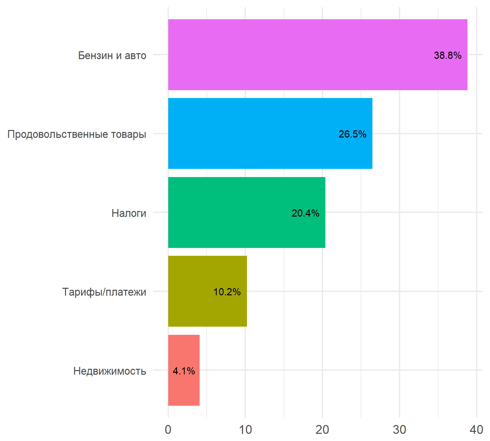
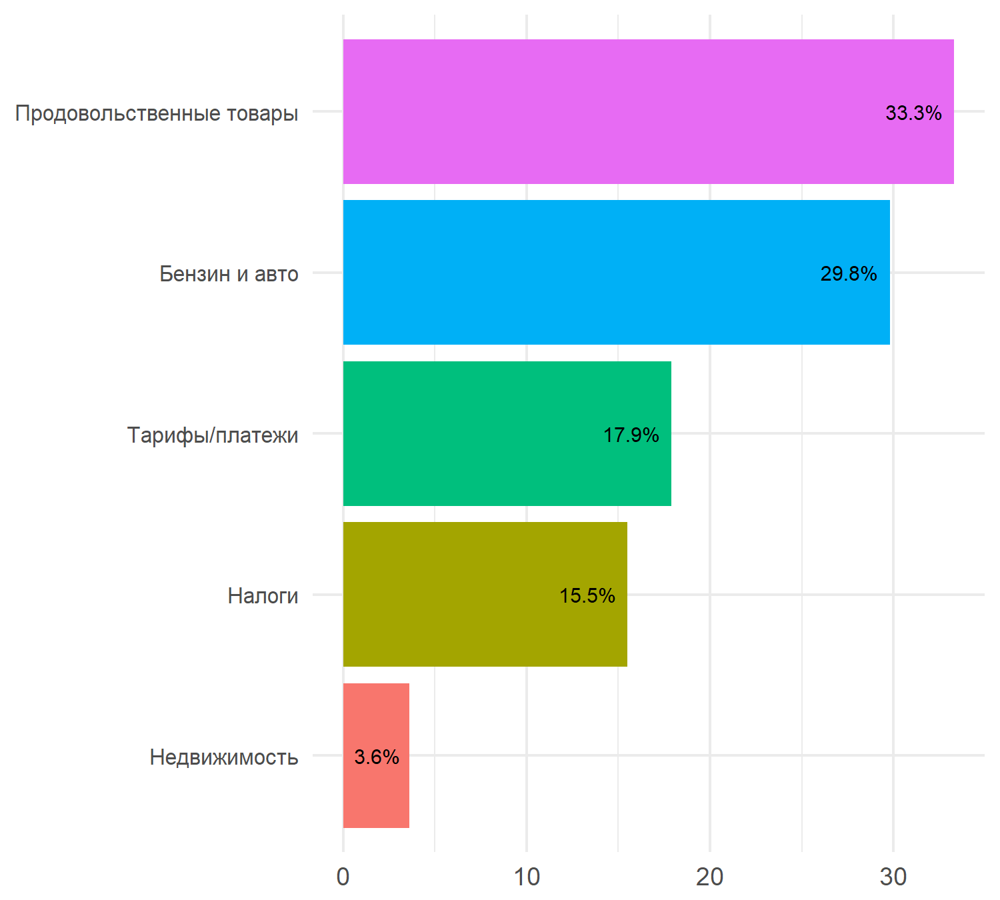

Big Data Indicators: ежемесячные отчеты о динамике индикаторов
Инфляционные ожидания населения
Сентябрь 2018 г.
Интенсивность инфляционных ожиданий
В сентябре 2018 г. инфляционные ожидания населения снизились, однако в целом остаются на повышенном уровне. Пока рано говорить о переломе тренда к росту ожиданий.
Ключевая причина снижения индикатора в сентябре состоит в резком росте числа новостных статей СМИ, упоминающих ожидания роста цен. При этом общее число комментариев (совокупная реакция интернет-пользователей на активность СМИ) осталась примерно на уровне августа.
Напомним, что повышенный уровень инфляционных ожиданий населения, в соответствии с big data индикатором наблюдается со второго полугодия 2017 г. При этом в 3 кв. 2018 г., по данным Росстата, был зафиксирован переход общей инфляции к ускорению после длительного периода снижения.


Note:
(1) Для удобства сопоставления индикаторы нормализованы: N(0, 1);
(2) Прочитать подробную информацию о big data индикаторе интенсивности инфляционных ожиданий и исследовать интерактивный график его динамики можно здесь.
Ежедневная динамика интенсивности ожиданий была взаимосвязана с динамикой курса рубля.

Note: Для удобства сопоставления индикаторы нормализованы: N(0, 1).
Факторы изменения интенсивности инфляционных ожиданий
Ключевыми факторами, сохраняющими инфляционные ожидания на повышенном уровне в течение сентября, оказались: динамика курса рубля и цены на сырье. При этом в контексте обсуждения инфляционных ожиданий отмечается некоторое снижение вклада факторов обеспокоенности состоянием мировой конъюнктуры, собственных доходов и неопределенности экономической динамики.

Note: Прочитать подробную информацию об анализе факторов изменения big data индикатора интенсивности инфляционных ожиданий и исследовать интерактивный график их динамики можно здесь.
Судя по содержанию сообщений, фактор будущего повышения НДС пока не оказал значительного воздействия на инфляционные ожидания населения. Обсуждение вопросов налоговой нагрузки в контексте ожиданий роста цен не является существенным - отмечалось всего в 7% сообщений, упоминающих ожидания инфляции, в сентябре.
Упоминания в комментариях отдельных сущностей за сентябрь 2018 г.

Note: Указанные выше категории в сентябре 2018 г. наблюдались всего в 27% сообщений. Веса на графике рассчитаны в границах множества сообщений с упоминаниями категорий.
Примеры комментариев: сентябрь 2018 г.
## Пора повышать цены на бензин
## самая радостная новость <...>, это рост цен за баррель
## Рост цен, рост цен, повышение налогов....
## просто скажите повышаются цены и все
## к людям ближе, наши цены еще выше
## процентов от 25 будет повышение цен на все!
## А при повышении доллара все дешевеет да? У нас по любому поводу дорожания валюты или наоборот - цены всегда растут
## Не нужно быть экспертом, чтоб предсказать повышение цен в России
## бензин, ЖКХ и прочие цены растут
## Ждемс повышения цен на топливо. И далее по списку... все тяготы лягут на конечного потребителя
## Значит цены вырастут
## Инфляция на самом деле и так давно уже выше 4%, а если учитывать то, как государство само повышает цены на свои услуги, то инфляция по этим параметрам даже 70-100%, как к примеру на выдачу загранпаспорта (цены повышались уже 2 раза).
## Толи еще будет, ждем повышения цен на бензин до 50 р
## уже пошли слухи что цена на бензин <...> опять повысится
## цены на бензин и солярку опять повысятсяАвгуст 2018 г.
Интенсивность инфляционных ожиданий
В августе 2018 г. инфляционные ожидания населения вновь возросли, продолжая повышение июня, произошедшее на фоне объявления о рассмотрении законопроектов о повышении НДС и о пенсионной реформе. Инфляционные ожидания интернет-пользователей по-прежнему значительно выше ожиданий от середины 2017 г.
Это соответствует общим ожиданиям повышения инфляции во втором полугодии 2018 г. со стороны Банка России и профессионального аналитического сообщества. Индикатор инфляционных ожиданий ФОМ, рассчитываемый на основе опросов, также сохраняет тренд к повышению, начавшийся в июне 2018 г.

Note:
(1) Для удобства сопоставления индикаторы нормализованы: N(0, 1);
(2) Прочитать подробную информацию о big data индикаторе интенсивности инфляционных ожиданий и исследовать интерактивный график его динамики можно здесь.
Ежедневная динамика интенсивности ожиданий также была значимо связана с динамикой курса рубля.

Note: Для удобства сопоставления индикаторы нормализованы: N(0, 1).
Факторы изменения интенсивности инфляционных ожиданий
Ключевыми факторами, с которыми население связало снижение собственных инфляционных ожиданий в течение августа, стали: обесценение курса доллара к рублю, в результате появления опасений новых санкций со стороны США и повышенной волатильности мировых финансовых рынков (Турция, Аргентина); мировая конъюнктура; обеспокоенность населения относительно состояния собственных доходов (также основной фактор роста ожиданий в июне); а также рост неопределенности в понимании будущей экономической динамики со стороны населения.

Note: Прочитать подробную информацию об анализе факторов изменения big data индикатора интенсивности инфляционных ожиданий и исследовать интерактивный график их динамики можно здесь.
Кроме того, в сообщениях, упоминающих ожидания роста цен, интернет-пользователи часто также упоминали цены на различные продукты питания (в основном, колбаса, рыба), а также цены на бензин.
Упоминания в комментариях отдельных сущностей за август 2018 г.

Неопределенность инфляционных ожиданий
В соответствии с данными big data indicators в августе 2018 г. было зафиксировано возобновление роста неопределенности инфляционных ожиданий. При этом аналогичный показатель, рассчитываемый ФОМ на основе опрососов населения, зафиксировал снижение относительно июля.

Note: Прочитать подробную информацию об индикаторе неопределенности инфляционных ожиданий и исследовать интерактивный график его динамики можно здесь.
Примеры комментариев: август 2018 г.
## к 100р за 1$ так же будешь говорить , что привыкнуть надо. А цены будут рости на всё- так же привыкнуть. Это уже деградация , привыкать к худшему.
## дак чем доллар дороже, тем зарплата ниже, так как рубль дешевеет а цены-то растут.
## Работаю в рыбном магазине . Цены как на дрожжах растут. На ценниках давно цена за 100гр., чтоб не шокировала.
## Конечно <...>. Экономика стабильности не предусматривает снижение цен, только рост, бессмысленный и беспощадный.
## Пффф, когда в этой стране что-то дешевело? По-моему таких прецедентов еще не случалось в новейшей истории. Так что при любых внешних и внутренних факторах цены будут только расти.
## У нас может только подорожать. Ведь её надо привезти с дальнего востока в европейскую часть, а гсм стал дороже и соответственно независимо от сложившейся себестоимости продукта цены будут непременно и стабильно расти.
## и все цены будут выше.А вот машин меньше точно не будет.
## НДС повышают на 2% , а они хотят на 10% поднять цены . <...> Куда смотрит антимонопольная служба ???? Поднимут цены на бензин и всё опять подорожает .
## Как всегда, цены только растут
## мяса в изделиях все меньше ,а цены все выше...
## Хороший замечаний. Видимо из-за того, что резко цены в России повысили.
## Я наверное чего-то не понимаю. Государство повышает налоги, чтобы наполнить бюджет, но тем самым изымает деньги из экономики. Очевидно, что сокращение денег в экономике приведёт к инфляции. <...>
## Не знаю,что там за инфляция в их 1%,или 3%.Цены как росли,так и продолжают рост.
## А ускорение инфляции за счёт поднятия НДС, роста стоимости топлива и услуг ЖКХ не допустили?
## если цены стабильно растут, то очередное повышение не является нарушением стабильности
## это вызовет шквальный рост цен на бензин, вот посмотрим... если его не отрегулировать в ручном режиме...
## Если бы только на колбасу, цена вырастет...
## не надо быть семи пядей во лбу, что бы понимать, что при повышении НДС на 2%, отпускные цены тоже поднимутся.Июль 2018 г.
Интенсивность инфляционных ожиданий
В июле 2018 г. инфляционные ожидания населения снизились – после скачка в июне на фоне объявления о рассмотрении законопроектов о повышении НДС и о пенсионной реформе. При этом, несмотря на снижение, инфляционные ожидания интернет-пользователей остаются повышенными относительно середины 2017 г.
Это соответствует общим ожиданиям повышения инфляции во втором полугодии 2018 г. со стороны Банка России и профессионального аналитического сообщества. Индикатор инфляционных ожиданий ФОМ, рассчитываемый на основе опросов, также снизился в июле по отношению к июню.
Ожидания интернет-аудитории относительно роста цен в ближайший год сблизились с ожиданиями, измеренными по общей выборке домохозяйств в регионах (по данным ФОМ), сократив значительный разрыв, наблюдаемый с середины 2017 г.

Note:
(1) Для удобства сопоставления индикаторы нормализованы: N(0, 1);
(2) Прочитать подробную информацию о big data индикаторе интенсивности инфляционных ожиданий и исследовать интерактивный график его динамики можно здесь.
Подневной индикатор интенсивности инфляционных ожиданий свидетельствует о постепенном снижении интенсивности инфляционных ожиданий в течение месяца - с небольшим усилением к концу июля (времени заседания Банка России о динамике ключевой ставки). Внутримесячная динамика интенсивности ожиданий также была значимо связана с динамикой курса рубля.

Note: Для удобства сопоставления индикаторы нормализованы: N(0, 1).
Факторы изменения интенсивности инфляционных ожиданий
Ключевыми факторами, с которыми население связало снижение собственных инфляционных ожиданий в течение июля, являлись снижение обеспокоенности относительно динамики курса рубля и роста сырьевых цен (способствующих росту цен на бензин).
Кроме того, перешла к снижению обеспокоенность относительно состояния собственных доходов населения, ставшая одним из главных факторов, с которым население связывало резкий рост интенсивности инфляционных ожиданий в июне.
В то же время, резко возросли опасения населения относительно экономического кризиса, с возможностью которого население также связывает собственные инфляционные ожидания.

Note: Прочитать подробную информацию об анализе факторов изменения big data индикатора интенсивности инфляционных ожиданий и исследовать интерактивный график их динамики можно здесь.
Результаты тематического моделирования
Результаты тематического моделирования и поиска сущностей за июль 2018 г. подтверждают высокую значимость факторов роста цен на бензин и ожидаемых изменений в налогообложении на сохранение повышенного уровня инфляционных ожиданий.
Topic modeling
Отдельные важные темы комментариев, упоминающих ожидания роста цен, за июль 2018 г.

Note: Общие результаты тематического моделирования - за каждый квартал с начала 2017 г. - доступны в разделе “Индикаторы”.
Triggers in july
Упоминания в комментариях отдельных сущностей за июль 2018 г.

Неопределенность инфляционных ожиданий
В соответствии с данными big data indicators в июле 2018 г. было зафиксировано небольшое снижение неопределенности инфляционных ожиданий. При этом аналогичный показатель, рассчитываемый ФОМ на основе опрососов населения, зафиксировал аналогичную динамику относительно июня.

Note: Прочитать подробную информацию об индикаторе неопределенности инфляционных ожиданий и исследовать интерактивный график его динамики можно здесь.
Примеры комментариев: июль 2018 г.
## Бензин плюс НДС, вот что подымет инфляцию, приведет к росту доходов 5-10% россиян и обнищанию 95-90%.
## это именно оно. Уже изучали этот вопрос. И выяснили, что где-то за полгода до повышения начинает разгоняться инфляция.
## Может рост бензина, цен на продукты , услуги ЖКХ причина роста инфляции, а не болельщики?
## Жить будем хуже, повышение НДС - вырастут цены на всё.
## все цены растут вместе с налогами <...> и пенсионным возрастом
## Потому-что неизбежное повышение цен тяжким бременем ляжет на плечи малообеспеченных граждан.
## А цена бензина в РФ всё равно вырастет
## Нефтяная страна повышает цены на бензин, в то время как страны не нефтянщики её снижают.
## Все страны мира подняли цены на бензин с повышением цен на нефть.
## однозначно, приведёт к росту цен... такая вот у нас конкуренция...
## рост цен на бензин, рост цен на билеты, рост цен на все
## цены повышаются из-за налогов
## и у нас тоже повышение цен будет
## Опять будет повышение цен на топливо
## цены все выше кофе все хуже выручки все меньше ....Апрель 2018 г.
Интенсивность инфляционных ожиданий
В апреле 2018 г. инфляционные ожидания населения ожидаемо возросли на фоне введения новых санкций со стороны США и соответствующего ослабления курса рубля. Инфляционные ожидания интернет-пользователей остаются повышенными относительно середины 2017 г.
Это соответствует общим ожиданиям повышения инфляции во втором полугодии 2018 г. со стороны Банка России и профессионального аналитического сообщества. Так, к примеру, big data индикатор инфляционных ожиданий возрос примерно на 33% (с 0.12 до 0.16), а индекс инфляционных ожиданий MMI в апреле вырос на 28%.
Плавный рост big data индикатора инфляционных ожиданий продолжился и в первую декаду мая.
Ожидания интернет-аудитории относительно роста цен в ближайший год остаются выше ожиданий, измеренных по общей выборке домохозяйств в регионах. В апреле 2018 г. индикатор медианных ожиданий роста цен, рассчитываемых ФОМ для Банка России на основе опросов населения, снизился до рекордных значений.

Note:
(1) Для удобства сопоставления индикаторы нормализованы: N(0, 1);
(2) Прочитать подробную информацию о big data индикаторе интенсивности инфляционных ожиданий и исследовать интерактивный график его динамики можно здесь.
Подневной индикатор интенсивности инфляционных ожиданий показал их резкий рост в течение месяца, начавшийся 9 апреля - момента вступления в силу нового пакета санкций США против России. Это событие также спровоцировало новый виток ослабления рубля, несмотря на продолжение устойчивого роста сырьевых цен.
При этом сохраняющийся рост цен на нефть, способствующий росту цен на бензин, является дополнительным фактором повышения инфляционных ожиданий - на фоне все еще слабой динамики реальных располагаемых доходов.

Note: Для удобства сопоставления индикаторы нормализованы: N(0, 1).
Факторы изменения интенсивности инфляционных ожиданий
Анализ факторов изменения интенсивности инфляционных ожиданий свидетельствует о том, что ключевыми факторами, с которыми население связывало рост собственных инфляционных ожиданий в течение апреля, являлись: ослабление курса рубля, рост сырьевых цен, способствующий росту цен на бензин, а также обеспокоенность неопределенностью экономической ситуации.
При этом обеспокоенность населения была сконцентрирована именно на динамике курса – доля упоминаний состояния мировой конъюнктуры (включая упоминания санкций и связанных с ними понятий) в сообщениях интернет-пользователей, содержащих упоминания ожиданий роста цен, в апреле снизилась.

Note: Прочитать подробную информацию об анализе факторов изменения big data индикатора интенсивности инфляционных ожиданий и исследовать интерактивный график их динамики можно здесь.
Результаты тематического моделирования
Результаты тематического моделирования подтверждают высокую значимость факторов роста цен на нефть и ослабления курса рубля для повышения инфляционных ожиданий.
Отдельные важные темы комментариев, упоминающих ожидания роста цен, за 2018 г.

Note: Общие результаты тематического моделирования - за каждый квартал с начала 2017 г. - доступны в разделе “Индикаторы”.
Неопределенность инфляционных ожиданий
В соответствии с данными big data indicators в апреле 2018 г. было зафиксировано небольшое повышение неопределенности инфляционных ожиданий. Это согласуется с небольшим повышением вклада фактора неопределенности экономической ситуации в динамику индикатора интенсивности инфляционных ожиданий. При этом аналогичный показатель, рассчитываемым ФОМ на основе опрососов населения, зафиксировал значительный рост неопределенности инфляционных ожиданий в марте 2018 г. - до уровней середины 2015 г.

Note: Прочитать подробную информацию об индикаторе неопределенности инфляционных ожиданий и исследовать интерактивный график его динамики можно здесь.
Примеры комментариев: апрель 2018 г.
## Сами нас готовят к повышению цен на топливо.
## <...> рост цен из за роста цены на нефть,а почему же когда цена на нефть падала,а цена бензина всё равно росла?
## Можно хоть завтра сделать всем зарплату по 100, 150 тыс. рублей – а цены вырастут, и ресурсный пай окажется у человека прежним.
## Повышение стоимости на бензин,повлияет на рос цен на продукты.Долго ли ещё <...>.
## Сами у себя покупаем, чтобы потом перепродать подороже !!!! Наживаемся на своём же народе!!! Опять грядёт повышение цен! И инфляция будет высоченная!!! Кого обманываем, - все всё понимают, - даже дети!!!!!!!!
## Не могу понять: цены на нефть растут - стоимость бензина растет; цены на нефть падают - надо поддержать отрасль - стоимость бензина растет.
## Цены на нефть падали бензин рос , цены на нефть растут бензин растет !!!
## значит на все будут цены расти (
## С начала мы радуемся как растет нефть, с возгласами «эх, заживем!!», потом с тихой грустью офигеваем как растет в цене топливо и из-за этого цены абсолютно на все!!!
## для того, чтобы понять почему не опускаются цены, нужно стать предпринимателем. Снижение цены есть, но оно постепенное, т.к. в цену товара при его закупке заложена цена на доллар, например, 65 руб, но при падении до хотя бы 60 руб, нужно реализовать предыдущий и если предприниматель не уйдет в убыток, постепенно цена снизится при последующих закупках. А где - то и нет, в случае, если высокий доллар сильно ударил по бюджету, тогда цену не опускают только для того, чтобы остаться на плаву и восполнить убытки. Ведь кроме этого нужно заплатить налоги и выдать людям зарплату.
## Да то что цены на [еду] вырастут ерунда , главное чтобы инфляция снижалась )))
## отличное "импортозамещение", вот только почему-то все "импортозамещенные" товары растут в цене так же, как и импортные при любых колебаниях курса ?
## Ну теперь любое повышение цен и налогов можно списать на влияние США
## раньше когда они продавали товары по завышенным ценам когда рубль отбил свои позиции опять, они оправдали завышенные цены тем, что они товар купили во время подорожания доллара и поэтому товар пока ещё дорогой, но прошло 4 года цена так же осталась, у нас никогда цены не снижаются
## какой это маразм, цены на продовольственнныые товары уже и так через чур высоки, с учетом реальных доходов населения, особенно в городах с небольшим колличеством населения
## цена на нефть падает-дорожает топливо, цена нефти растет-топливо все равно дорожает
## Ха-ха! А 76% [людей] думали что в сказку попали? Вот пусть в магазин придут и права покачают: мы же зарплату в рублях получаем, на каком основании цены повышаете, <...>???
## При понижении процентной ставки, отечественная валюта также подешевеет. А это в свою очередь приведёт к ещё большему росту инфляции.Март 2018 г.
Интенсивность инфляционных ожиданий
В марте 2018 г. обеспокоенность населения краткосрочной динамикой инфляции немного возросла относительно предшествующего месяца. Инфляционные ожидания интернет-пользователей остаются повышенными относительно середины 2017 г. Это соответствует общим ожиданиям повышения инфляции во втором полугодии 2018 г. со стороны Банка России и профессионального аналитического сообщества.
Ожидания интернет-аудитории относительно роста цен в ближайший год с середины 2017 г. остаются выше ожиданий, измеренных по общей выборке домохозяйств в регионах. В марте 2018 г. индикатор медианных ожиданий роста цен, рассчитываемых ФОМ для Банка России на основе опросов населения остался примерно на уровне февраля.

Note:
(1) Для удобства сопоставления индикаторы нормализованы: N(0, 1);
(2) Прочитать подробную информацию о big data индикаторе интенсивности инфляционных ожиданий и исследовать интерактивный график его динамики можно здесь.
Подневной индикатор интенсивности инфляционных ожиданий показал наиболее заметный рост в конце месяца, а именно, с 26 марта - момента вступления в силу нового решения ЦБ РФ о снижении ключевой ставки ЦБ РФ. Это уже второй последовательный эпизод коррекции инфляционных ожиданий вверх на фоне смягчения условий денежно-кредитной политики. Причем, если в феврале 2018 г. эта коррекция была незначительной, в марте 2018 г. она оказалась существенной, став одной из основных причин повышения индикатора по итогам всего месяца. В течение марта 2018 г. наблюдалось незначительное ослабление курса рубля, что также могло способствовать небольшому повышению инфляционных ожиданий.

Note: Для удобства сопоставления индикаторы нормализованы: N(0, 1).
Факторы изменения интенсивности инфляционных ожиданий
Анализ факторов изменения интенсивности инфляционных ожиданий подтверждают гипотезу о том, что денежно-кредитная политика оказала значимое влияние на рост инфляционных ожиданий населения в марте 2018 г. При этом другим важным фактором роста ожиданий стало повышение обеспокоенности населения неопределенностью экономической ситуации. Рост вклада этого фактора в общий рост ожиданий был также зафиксирован в последнюю декаду марта.

Note: Прочитать подробную информацию об анализе факторов изменения big data индикатора интенсивности инфляционных ожиданий и исследовать интерактивный график их динамики можно здесь.
Более детальный анализ содержания комментариев марта 2018 г. - с акцентом на выявление специфических факторов их изменений (выделение сущностей в текстовых сообщениях) - показывает, что важными факторами повышенного уровня инфляционных ожиданий остаются цены на бензин и опасения относительно повышения различных тарифов и платежей. Эти факторы часто обсуждаются интернет-пользователями при упоминании об ожиданиях роста цен.

Note: приведенные категории упоминаются примерно в 40% всех комментариев за февраль 2018 г.
Результаты тематического моделирования
Вместе с тем, результаты тематического моделирования свидетельствуют о том, что, помимо обеспокоенности ростом цен на топливо, в течение всего 1 кв. 2018 г. население продолжало проявлять значимую обеспокоенность состоянием собственных доходов, продолжая связывать их снижение с обеспокоенностью ростом цен.
Отдельные важные темы комментариев, упоминающих ожидания роста цен, за 1 кв. 2018 г.
Note: Общие результаты тематического моделирования - за каждый квартал с начала 2017 г. - доступны в разделе “Индикаторы”.
Неопределенность инфляционных ожиданий
В соответствии с данными big data indicators в марте 2018 г. было зафиксировано небольшое повышение неопределенности инфляционных ожиданий. Это согласуется с небольшим повышением вклада фактора неопределенности экономической ситуации в динамику индикатора интенсивности инфляционных ожиданий. При этом аналогичный показатель, рассчитываемым ФОМ на основе опрососов населения, зафиксировал значительный рост неопределенности инфляционных ожиданий в марте 2018 г. - до уровней середины 2015 г.

Note: Прочитать подробную информацию об индикаторе неопределенности инфляционных ожиданий и исследовать интерактивный график его динамики можно здесь.
Примеры комментариев: март 2018 г.
## Господа я сейчас плохую вещь скажу. Рост цен говорит о росте экономики так или иначе они будут расти на все товары. По этому не надо думать что цены на бензин будут падать. Они будут только расти. Смиритесь с этим.
## А цены на нефть резко подняли, спасая рубль, который стал выгодным средством спекуляции. Только за счёт спекулятивных сделок и держится. К экономике это имеет весьма условное отношение.
## С Киришского НПЗ ("СургутНефтеГаз") идёт качественное топливо(так как много идёт и на экспорт), а если говорить о качестве нефтепродуктов Роснефти на Дальнем Востоке (к примеру на Сахалине), то они не соответствуют европейским стандартам. Это легко ощутить хоть в Хабаровске, хоть в Комсомольске-на-Амуре, Южно-Сахалинске. И цены здесь намного выше, чем на Северо-Западе России.
## Государство забирает себе 70% от цены топлива, и постоянно поднимает эту долю, но сдерживает цены в рознице при том, что цены на всё, что нужно для производства постоянно растут. Долго это продолжаться не будет. Скорее всего после выборов взлетят цены на бензин, а нам из зомбоящиков будут рассказывать, что в Европе тоже такие цены, забывая при этом про европейские зарплаты.
## А на бензин будет ещё выше цена-я вам обещаю !
## Прям не знаю куда бы деть свои миллионы, слава богу хоть на топливо цена вырастет...
## рост цен говорит о запуске инфляции, в свою очередь удешевлении рубля, снижении доходов населения в качественном виде, вместе с тем, что сейчас уже и происходит, увеличение количества кредитов в банках, повышение закредитованности населения, ввиду всего перечисленного - бедность...
## в 17 г рост цен составил 7-8%, в 18 г прогнозируют тот же рост. Это оптимистично конечно. На несколько рублей вырастит цена это факт.
## Так выборы уже в прошлом. \nМожно ВСЕ повышать. Вплоть до цен на самые необходимые продукты питания, электроэнергию, газ, проезд на общественном транспорте, услуги связи, отопление, водоотведения, сборы, штрафы за неправильный переход дорог.
## <...> Зато совершенно точно вырастут налоги и поднимутся цены . <...>
## ценын растут не от роста экономики а из за дефецита гос бюджета,сама банковская система предпологает такое поведение иначе она сдохнет. Деньги делают дерьги а чтоб вы не разбогатели есть сдерживающий фактор инфляция
## Ну а почему бы нет, цены на всё растут расходы тоже увеличивается. По-моему всё нормально надо поднимать экономикуИндикатор кризисных настроений населения
Сентябрь 2018 г.
Интенсивность кризисных настроений
Обеспокоенность населения кризисными процессами в экономике значительно возросла (до 0.31 по сглаженному ряду). Аналогичный уровень ожиданий наблюдался в феврале 2016 г. Год назад, в сентябре 2017 г. значение индикатора было существенно ниже (0.19 по сглаженному ряду).
Интересно, что как и в случае инфляционных ожиданий, наблюдалось резкое увеличение числа новостных статей СМИ - в данном случае на тему экономического кризиса. Однако рост обсуждений интернет-пользователями публикуемых статей и упомианния кризиса превысили повышение обеспокоенности СМИ.


Note:
(1) Для удобства сопоставления индикаторы нормализованы: N(0, 1);
(2) Прочитать подробную информацию о big data индикаторе кризисных настроений и исследовать интерактивный график его динамики можно здесь.
Повышение индикатора кризисных настроений в сентябре происходило на фоне повышения ключевой ставки Банком России и продолжения роста цен на нефть.

Note: Для удобства сопоставления индикаторы нормализованы: N(0, 1).
Факторы изменения интенсивности кризисных настроений
Основным фактором скачка кризисных настроений в августе стала обеспокоенность населения состоянием собственных доходов. Это соотносится с данными Росстата и ряда других источников о падении потребительских настроений в 3 кв. 2018 г.
В качестве второстепенного фактора роста кризисных настроений можно отметить цены на сырье. Так, по данным сентября цены на бензин снова немного возросли (на 0.1% к августу).

Note: Прочитать подробную информацию об анализе факторов изменения big data индикатора кризисных настроений и исследовать интерактивный график их динамики можно здесь.
Примеры комментариев: сентябрь 2018 г.
## циклы мирового порядка повторяются, просто вам об этом писать нельзя ил прото дилетанты. сейчас строколетний цикл глобального кризиса повторяется
## рф не имеет долларовых инвестиций в нужном размере, а рубль не разрешает мвф сделать инвестиционным. поэтому у нас кризис.
## у нас кризис
## от перестановки мест слагаемых значение суммы не меняется. сырьевая модель экономики, приведшая к настоящему кризису не меняется
## вот и весь кризис. это даже не 1%
## только и делаем, что переживаем кризисы
## экономику загоняют снова в кризисную стагнацию
## да при нефти 50$ и выше экономика должна развиваться. а у нас, как всегда кризис. не слишком ли много кризисов???? вы подсчитайте сколько за последние годы у нас кризисов
## Эм, нас готовят незаметно к новому кризису ?\nА то все чаще разговоры о нем
## То есть глобальный кризис ещё впереди? То есть это были только цветочки?)))
## Этой осенью начнется новый мощный мировой кризис, достанется абсолютно всем.
## думаю будет меньше,так как кризис в стране.
## В инете прочитала что сейчас налоговое время поэтому и спад, подъем будет потом.
## Я думал у нас уже бушует кризис всего , с 2014
## Россиянам не нужно готовиться к кризису - они уже привыкли жить в нём
## Откуда кризис, что цена на нефть упала?
## У нас кризис и не заканчивался никогда. Дна у него, похоже, просто нет
## Сейчас кризис.
## Не это ли верный признак скорого кризиса?Август 2018 г.
Интенсивность кризисных настроений
Обеспокоенность населения кризисными процессами в экономике осталась примерно на уровне июля (0.25 по сглаженному ряду). Значения индикатора в 2018 г. по-прежнему значительно превышают уровень соответствующего месяца предшествующего года (0.19 по сглаженному ряду).

Note:
(1) Для удобства сопоставления индикаторы нормализованы: N(0, 1);
(2) Прочитать подробную информацию о big data индикаторе кризисных настроений и исследовать интерактивный график его динамики можно здесь.
Повышение подневного индикатора кризисных настроений в августе, как и в июле, не оказалось значительно связанным с подневной динамикой курса и цен на нефть.

Note: Для удобства сопоставления индикаторы нормализованы: N(0, 1).
Факторы изменения интенсивности кризисных настроений
В августе ключевыми факторами, способствующими кризисным настроениям населения стали: обеспокоенность состоянием собственных доходов, мировая конъюнктура и повышение неопределенности экономической ситуации.

Note: Прочитать подробную информацию об анализе факторов изменения big data индикатора кризисных настроений и исследовать интерактивный график их динамики можно здесь.
Примеры комментариев: август 2018 г.
## О многих вещах вы не услышите <...>. По ним вы не услышите о миллионах россиян, живущих в нищете. Вам не расскажут о экономическом кризисе в РФ.
## Скорый кризис неизбежен в мировой экономике.
## так же начинался кризис 2008 ипотечного кредитования в Америке
## 2008 год,США.Ипотечный кризис
## и страна сразу в кризисе.
## Это не кризис - это <...>
## Странно!\nПочему экономика сопоставляется с природной стихией?\nЭкономический кризис - это разве стихийное бедствие, как землетрясение, а не творение рук ( умов) человеческих? И его нельзя предотвратить?Июль 2018 г.
Интенсивность кризисных настроений
Обеспокоенность населения кризисными процессами в экономике в июле снова возросла (с 0.26 до 0.28 по сглаженному ряду). Значения индикатора в 2018 г. по-прежнему значительно превышают уровень соответствующего месяца предшествующего года.

Note:
(1) Для удобства сопоставления индикаторы нормализованы: N(0, 1);
(2) Прочитать подробную информацию о big data индикаторе кризисных настроений и исследовать интерактивный график его динамики можно здесь.
Повышение подневного индикатора кризисных настроений в июле не оказалось значительно связанным с подневной динамикой курса и цен на нефть.

Note: Для удобства сопоставления индикаторы нормализованы: N(0, 1).
Факторы изменения интенсивности кризисных настроений
В июле ключевыми факторами усиления кризисных настроений населения стали рост обеспокоенности относительно внутренней политики и повышение неопределенности экономической ситуации. Таким образом, обеспокоенность населения инфляционными процессами, зафиксированная в июне на фоне объявлений о рассмотрении законопроектов о повышении НДС и пенсионного возраста, сменилась усилением кризисных настроений. При этом для населения также повысилась неопределенность в понимании будущей экономической динамики.

Note: Прочитать подробную информацию об анализе факторов изменения big data индикатора кризисных настроений и исследовать интерактивный график их динамики можно здесь.
Примеры комментариев: июль 2018 г.
## В несчастье по жизни и рецессии есть свои плюсы..
## отчасти соглашусь, но кредита и ипотеки без % не может быть, будет ибо каждый год новый кризис.
## мировой финансовый кризис прежде всего ударит по отсталым экономикам, особенно в нашем случае - возможное падение цен на ресурсы весьма печально будет для нас
## мои поздравления, отметьте 6 июля, как дату начала нового мирового кризиса
## кризис наступает
## кризис, санкции, и т.д.
## расскажи откуда у нас спад?
## ну вообще кризис затронул все страныАпрель 2018 г.
Интенсивность кризисных настроений
Обеспокоенность населения кризисными процессами в экономике в апреле немного снизилась (с 0.32 до 0.29). Однако текущие значения индикатора все еще значительно превышают уровень соответствующего месяца предшествующего года (примерно на 80%).

Note:
(1) Для удобства сопоставления индикаторы нормализованы: N(0, 1);
(2) Прочитать подробную информацию о big data индикаторе кризисных настроений и исследовать интерактивный график его динамики можно здесь.
Повышение подневного индикатора кризисных настроений, как и в случае индикатора инфляционных ожиданий, в большей степени было скоррелировано с динамикой курса рубля. Тем не менее, эффект ослабления курса на инфляционные ожидания оказался сильнее, чем на обеспокоенность динамикой инфляции.

Note: Для удобства сопоставления индикаторы нормализованы: N(0, 1).
Факторы изменения интенсивности кризисных настроений
В апреле 2018 г., последовательно, как и в марте, обеспокоенность возможностью экономического кризиса со стороны населения в большей степени была связана с состоянием мировой конъюнктуры. Однако если в марте движущей силой были опасения введения новых санкций, то в апреле - это была обеспокоенность возможным влиянием на российскую экономику уже введенного пакета санкций. Судя по снижению индикатора в апреле по отношению к марту, опасения населения относительно силы нового пакета санкций оправдались не полностью.

Note: Прочитать подробную информацию об анализе факторов изменения big data индикатора кризисных настроений и исследовать интерактивный график их динамики можно здесь.
Примеры комментариев: апрель 2018 г.
## я имел в виду, что да, сделали дешевле. В стране кризис, у людей итак денег нет, все на всем экономят, вот и приходится подстраиваться.
## на курсы посмотри! Или это явная победа над кризисом?
## готовтесь скоро будет кризис!
## как только она [цена на нефть] снизилась, и даже не достигла уровня 90-х, в стране сразу кризис и спад пости во всех сферах
## Это почему последние 5 лет экономический спад? Налоги низкие очень!
## А в общем, я вижу только общий экономический спад, семью бы прокормить, а правители вводят новые <...> налоги.
## Нам в России кризис нипочем,он у нас и не заканчивался??
## Он и не кончался чушь какая.за те года что я живу кризис постоянно
## У нас вобще спад экономики 3.6% нет никакого ростаМарт 2018 г.
Интенсивность кризисных настроений
Обеспокоенность населения кризисными процессами в экономике в марте значимо возросла – примерно до уровня середины 2016 г., в 2 раза превысив значение марта предшествующего года.

Note:
(1) Для удобства сопоставления индикаторы нормализованы: N(0, 1);
(2) Прочитать подробную информацию о big data индикаторе кризисных настроений и исследовать интерактивный график его динамики можно здесь.
Повышение подневного индикатора кризисных настроений происходило на фоне небольшого ослабления рубля в марте 2018 г.

Note: Для удобства сопоставления индикаторы нормализованы: N(0, 1).
Факторы изменения интенсивности кризисных настроений
В марте 2018 г. обеспокоенность возможностью экономического кризиса со стороны населения в большей степени была связана с состоянием мировой конъюнктуры (включая опасения введения новых санкций), а также со слабым повышением обеспокоенности населения инфляционными процессами в экономике.

Note: Прочитать подробную информацию об анализе факторов изменения big data индикатора кризисных настроений и исследовать интерактивный график их динамики можно здесь.
Примеры комментариев: март 2018 г.
## Может послужить толчком для мирового финансового кризиса.
## <...> привел страну к кризису
## как только она [цена на нефть] снизилась, и даже не достигла уровня 90-х, в стране сразу кризис и спад пости во всех сферах
## Это почему последние 5 лет экономический спад? Налоги низкие очень!
## Да, не посильным становиться сия ноша многим, налоги большие, материалы дорогие, бензин зашкаливает, да и альтернативы дачам в плане не дорогого отдыха хватает. А в общем, я вижу только общий экономический спад, семью бы прокормить <...>.
## не на много. и если учесть, что уже прошло почти 20 лет, то на мизер савсем. да и то это <...> заслуга высокой цены на нефть. как только она снизилась, и даже не достигла уровня 90-х, в стране сразу кризис и спад пости во всех сферах
## Пик нефтедобычи придётся на начало 20-х, а потом спад из-за истощения месторождений.
## Несмотря на продолжающийся пятый год спад реальных располагаемых доходов граждан, данные Росстата указывают на бурный рост трат и сокращение сбережений как в банках, так и наличных (см. график). Вот так. Спад реальных доходов, сокращение сбережений.